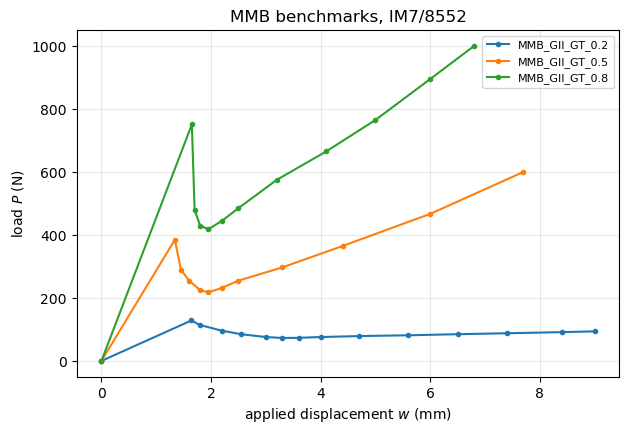

Benchmark data: Krueger (2012), NASA/CR-2012-217562#
Krueger, Development and Application of Benchmark Examples for Mixed-Mode I/II Quasi-Static Delamination Propagation Predictions, NASA/CR-2012-217562, NIA Report No. 2012-01, 2012.
This report contains no DCB case. Its benchmarks are for the mixed-mode bending (MMB) specimen at \(G_{II}/G_T\) = 0.2, 0.5 and 0.8, created with 2D plane strain FE models and the virtual crack closure technique (VCCT), and used to assess the VCCT propagation of ABAQUS. The DCB benchmarks of the same series, R. Krueger, An Approach to Assess Delamination Propagation Simulation Capabilities in Commercial Finite Element Codes, NASA/TM-2008-215123 (reference [3] of the report), are
compared with panels in dcb_krueger2008.
The MMB data are recorded in mmb_cases below for a future comparison. panels cannot be run on these cases:
the damage of the
SB_TSLconnection is driven by the normal separation only, while the MMB needs a mixed-mode law, e.g. the Benzeggagh-Kenane criterion with \(\eta = 2.1\) used in the report;the loading lever of the MMB apparatus is not modelled.
Digitised data. The benchmark curves of Figs. 10, 14 and 19 were read by eye, \(\pm 0.1\) mm and \(\pm 3\)% of the load. The critical points \((w_{crit}, P_{crit})\) are given in the text and are exact.
[1]:
%matplotlib inline
import os
import sys
import numpy as np
import matplotlib.pyplot as plt
from IPython.display import Markdown, display
sys.path.insert(0, os.path.abspath('.'))
import dcb_utils as du
MMB benchmark data#
IM7/8552, Table 1 of the report, \(G_{Ic}\) = 0.212 N/mm, \(G_{IIc}\) = 0.774 N/mm and the Benzeggagh-Kenane exponent \(\eta\) = 2.1; the specimen of 25.4 mm width, 4.5 mm thickness and \(a_0\) = 25.4 mm. For each mixed-mode ratio \(G_{II}/G_T\), the lever length \(c\) of the MMB apparatus, the critical point \((w_{crit}, P_{crit})\) given in the text and the benchmark load-displacement curve digitised from the figures.
[2]:
im7_8552 = dict(E11=161000., E22=11380., E33=11380., nu12=0.32, nu13=0.32, nu23=0.45,
G12=5200., G13=5200., G23=3900.,
GIc=0.212, GIIc=0.774, eta_BK=2.1)
mmb_geometry = dict(b=25.4, h_total=4.5, L2=100.8, L2_star=152.4, a0=25.4, layup='[0]24')
mmb_cases = {
'MMB_GII_GT_0.2': dict(im7_8552, **mmb_geometry, c=92.9, wcrit=1.64, Pcrit=128.5,
source='Figs. 3, 9, 10',
benchmark=(np.array([0, 1.64, 1.8, 2.2, 2.55, 3.0, 3.3, 3.6, 4.0, 4.7, 5.6, 6.5, 7.4, 8.4, 9.0]),
np.array([0, 128.5, 114., 96., 85., 76., 73., 73.5, 76., 79., 81.5, 85., 88., 91.5, 94.]))),
'MMB_GII_GT_0.5': dict(im7_8552, **mmb_geometry, c=41.3, wcrit=1.34, Pcrit=385.,
source='Figs. 4a, 13, 14 (benchmark for applied displacement)',
benchmark=(np.array([0, 1.34, 1.45, 1.6, 1.8, 1.95, 2.2, 2.5, 3.3, 4.4, 6.0, 7.7]),
np.array([0, 385., 290., 255., 225., 218., 232., 255., 297., 365., 467., 600.]))),
'MMB_GII_GT_0.8': dict(im7_8552, **mmb_geometry, c=27.3, wcrit=1.65, Pcrit=751.,
source='Figs. 4b, 18, 19 (benchmark for applied displacement)',
benchmark=(np.array([0, 1.65, 1.7, 1.8, 1.95, 2.2, 2.5, 3.2, 4.1, 5.0, 6.0, 6.8]),
np.array([0, 751., 480., 430., 418., 445., 485., 575., 665., 765., 895., 1000.]))),
}
Table and plot of the benchmark data#
Initial stiffness and first peak of each digitised curve, dcb_utils.summary(..., first_peak=True); the first peak is the critical point given in the text, which the digitised curves contain exactly.
[3]:
rows = {k: v['benchmark'] for k, v in mmb_cases.items()}
display(Markdown(du.markdown_table(rows, first_peak=True)))
display(Markdown('| case | $w_{crit}$ (mm) | $P_{crit}$ (N) | lever $c$ (mm) |\n|---|---|---|---|\n' +
'\n'.join(f"| {k} | {v['wcrit']} | {v['Pcrit']} | {v['c']} |" for k, v in mmb_cases.items())))
fig, ax = plt.subplots(figsize=(7, 4.5))
du.plot_curves(ax, rows, {k: dict(marker='o', ms=3) for k in rows})
ax.set_xlabel('applied displacement $w$ (mm)')
ax.set_ylabel('load $P$ (N)')
ax.set_title('MMB benchmarks, IM7/8552')
plt.show()
curve |
K0 (N/mm) |
Pmax (N) |
delta at Pmax (mm) |
|---|---|---|---|
MMB_GII_GT_0.2 |
78.35 |
128.5 |
1.64 |
MMB_GII_GT_0.5 |
287.31 |
385.0 |
1.34 |
MMB_GII_GT_0.8 |
455.15 |
751.0 |
1.65 |
case |
\(w_{crit}\) (mm) |
\(P_{crit}\) (N) |
lever \(c\) (mm) |
|---|---|---|---|
MMB_GII_GT_0.2 |
1.64 |
128.5 |
92.9 |
MMB_GII_GT_0.5 |
1.34 |
385.0 |
41.3 |
MMB_GII_GT_0.8 |
1.65 |
751.0 |
27.3 |

Discussion#
The three benchmarks start with the critical point of delamination onset, followed by a load drop and, at larger displacements, a rising branch; the higher the mode II share, the larger the critical load. A comparison with panels needs a mixed-mode damage criterion in 'SB_TSL' and a model of the loading lever.